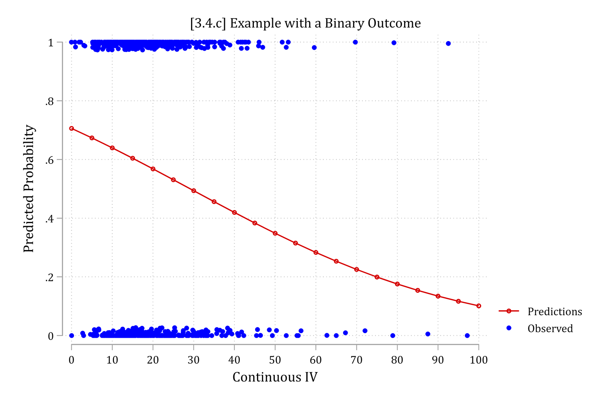
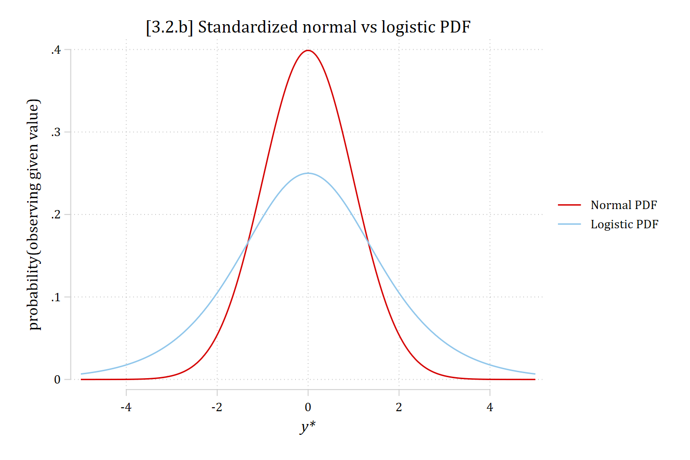
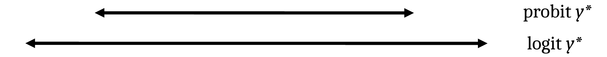
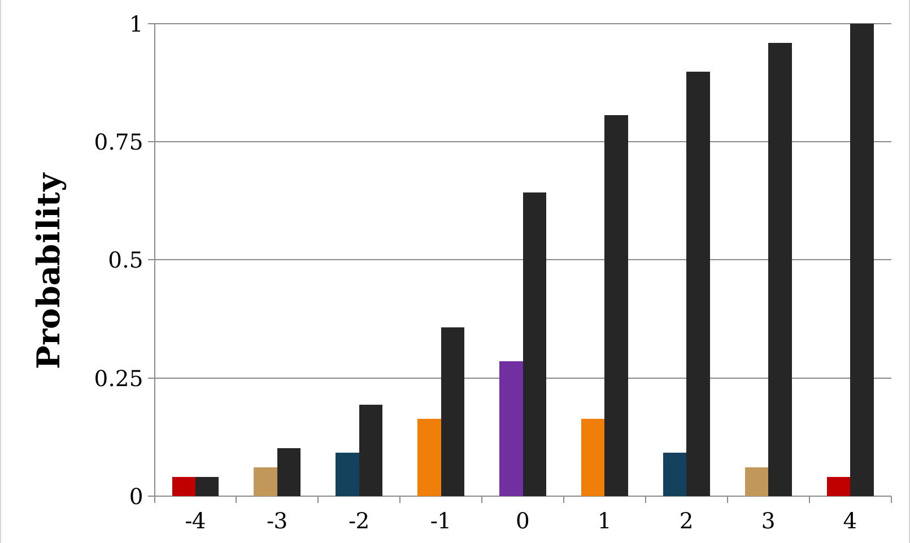
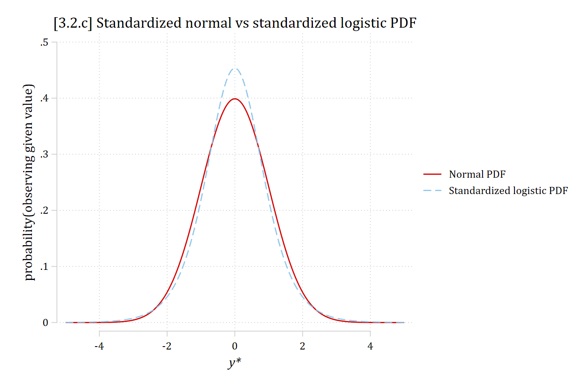
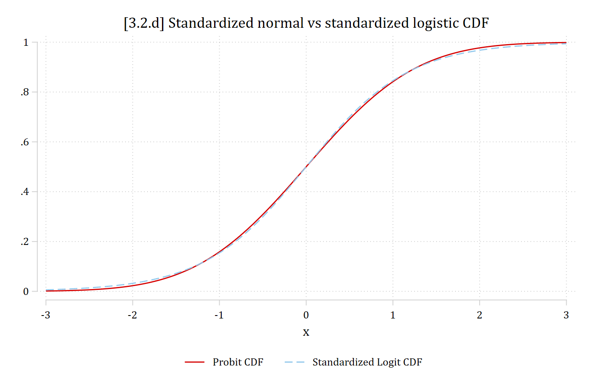
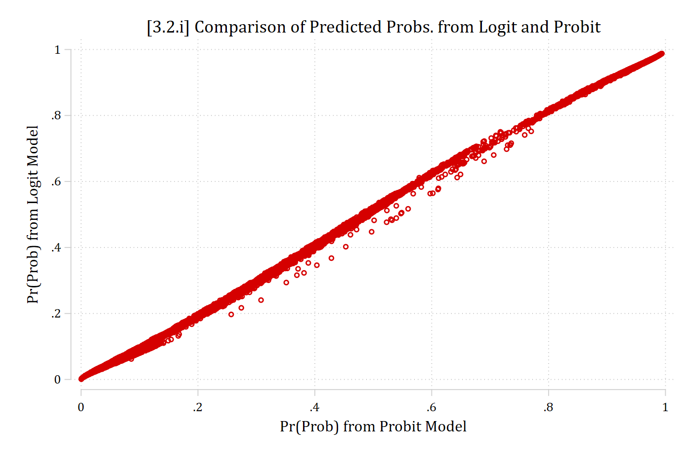

We cannot estimate the variance of the errors directly in categorical outcome models so we assume part of their distribution. Two ways to think about it:
Latent variable derivation : y* is unobserved so we do not know how well we predicted in that metricProbability model : our predictions are in a different metric than the observed outcomes

Identifying assumptions
All regression models are designed to produce the best fitting line; estimates are chosen so that the mean of the errors is 0
In all regression models:
\[y_{i} = F(\mathbf{x}_{i}\boldsymbol{\beta}) + e_{i}\]
I.e., The outcome y is a product of some predictable function of the x variables (explained variation), and due to some unexplained variation \(e_{i}\)
In a linear model, we can calculate \(e_{i}\) directly as predictions and outcome are in same metric
In binary logit/probit, have to assume/set the error distribution
This effectively changes the scale of y*
Assuming the error distribution
The probability model shown in the prior section is a binary logistic (logit) model , with an assumption that the error variance is \(\frac{\pi^{2}}{3}\) (SD ≈ 1.81)—made so that calculating predicted probabilities is easy
\[Logit: \Pr(y_{i} = 1\,|\,\mathbf{x}_{i}) = \Lambda(\mathbf{x}_{i}\widehat{\boldsymbol{\beta}}) = \frac{\exp(\mathbf{x}_{i}\widehat{\boldsymbol{\beta}})}{1 + \exp(\mathbf{x}_{i}\widehat{\boldsymbol{\beta}})}\]
A near identical model, the binary probit model , can be derived by assuming normally distributed errors (variance and SD = 1)
But calculating probabilities is much harder and requires calculus
\[Probit: \Pr(y_{i} = 1\,|\,\mathbf{x}_{i}) = \Phi(\mathbf{x}_{i}\widehat{\boldsymbol{\beta}}) = \int_{-\infty}^{\mathbf{x}_{i}\widehat{\boldsymbol{\beta}}} \frac{1}{\sqrt{2\pi}}\exp\left(-\frac{t^{2}}{2}\right)dt\]
twoway function phi = normalden (x), range (-5 5) || /// function psi = exp (x) / (1 + exp (x))^2, range (-5 5) || /// ytitle ("probability(observing given value)" ) xtitle ("{it:y*}" ) /// title ("[3.2.b] Standardized normal vs logistic PDF" ) /// legend (order (1 "Normal PDF" 2 "Logistic PDF" ))

library (haven) # import Stata data and labels library (dplyr) # data manipulation library (ggplot2) # graphs library (modelsummary) # tables of results library (cleanplots) # graph scheme cleanplots_defaults ()ggplot () + stat_function (fun = dnorm, aes (color = "Normal PDF" ), xlim = c (- 5 , 5 )) + stat_function (fun = dlogis, aes (color = "Logistic PDF" ), xlim = c (- 5 , 5 )) + scale_x_continuous (breaks = seq (- 4 , 4 , 2 )) + scale_color_discrete (limits = c ("Normal PDF" , "Logistic PDF" )) + labs (title = "[3.2.b] Standardized normal vs logistic PDF" ,x = "y*" , y = "probability(observing given value)" , color = NULL )
Effectively, logit’s y* will have a larger range than probit’s

Graphical illustration of identification assumption
The size of the β ’s cannot be interpreted directly since their magnitude reflects both:
The relationship between the x ’s and y *
Arbitrary
Effectively, logit and probit models are on different scales, with logit assuming a y* with a wider range
Comparing logit and probit
use "https://tdmize.github.io/data/data/cda_anes" , clear (American National Election Study 2020 - Pre-election | CDA | 2021-09-26)drop if missing (age, hhincome, woman, lgb, race4, /// (948 observations deleted)qui logit vote_trump hhincome edyrs i.woman i.lgb i.race4 /// est store logitmodqui probit vote_trump hhincome edyrs i.woman i.lgb i.race4 /// est store probitmodlabel mtitles("Logit" "Probit" ) /// title ("[3.2.h] Comparing coef estimates from logit and probit" )[3.2.h] Comparing coef estimates from logit and probit
----------------------------------------------------
(1) (2)
Logit Probit
----------------------------------------------------
Voting for Trump
Household income (~) -0.000 -0.000
(-0.897) (-1.085)
Education in years -0.140*** -0.078***
(-9.539) (-9.444)
Woman -0.355*** -0.197***
(-5.289) (-5.170)
LGB -1.164*** -0.623***
(-6.607) (-6.798)
Black -2.928*** -1.531***
(-15.543) (-17.253)
Hispanic -1.185*** -0.642***
(-9.382) (-9.285)
Other -0.648*** -0.348***
(-5.419) (-5.225)
2. Very important -0.598*** -0.346***
(-6.170) (-6.152)
3. Moderately impo~t -0.950*** -0.543***
(-9.817) (-9.713)
4. A little import~t -1.200*** -0.687***
(-10.841) (-10.831)
5. Not important a~l -1.949*** -1.091***
(-18.279) (-18.475)
Wrong track -3.308*** -1.897***
(-33.781) (-37.652)
Age of R 0.027* 0.015*
(2.129) (2.096)
Age of R # Age of R -0.000* -0.000*
(-2.509) (-2.399)
Constant 5.268*** 2.952***
(13.692) (13.854)
----------------------------------------------------
Observations 6857 6857
----------------------------------------------------
z statistics in parentheses
* p<0.05, ** p<0.01, *** p<0.001
<- read_dta ("https://tdmize.github.io/data/data/cda_anes.dta" )# Drop any missing data on the model IVs <- anes[complete.cases (anes[c ("age" , "hhincome" , "woman" , "lgb" , "race4" ,"edyrs" , "relimport" , "wrongtrack" )]), ]# Treat binary/nominal variables as factors using their value labels <- anes |> mutate (woman = as_factor (woman), lgb = as_factor (lgb), race4 = as_factor (race4),relimport = as_factor (relimport), wrongtrack = as_factor (wrongtrack)) |> droplevels ()<- glm (vote_trump ~ hhincome + edyrs + woman + lgb + race4 + relimport + + age + I (age^ 2 ), family = binomial (link = "logit" ), data = anes)<- glm (vote_trump ~ hhincome + edyrs + woman + lgb + race4 + relimport + + age + I (age^ 2 ), family = binomial (link = "probit" ), data = anes)# Compare coefficients modelsummary (list ("Logit" = logitmod, "Probit" = probitmod),statistic = "({statistic})" , fmt = 3 ,stars = c ("*" = .05 , "**" = .01 , "***" = .001 ),gof_map = "nobs" ,title = "[3.2.h] Comparing coef estimates from logit and probit" )
[3.2.h] Comparing coef estimates from logit and probit
Logit
Probit
* p < 0.05, ** p < 0.01, *** p < 0.001
(Intercept)
5.268***
2.952***
(13.692)
(13.744)
hhincome
-0.000
-0.000
(-0.897)
(-1.083)
edyrs
-0.140***
-0.078***
(-9.539)
(-9.456)
womanWoman
-0.355***
-0.197***
(-5.289)
(-5.179)
lgbLGB
-1.164***
-0.623***
(-6.607)
(-6.796)
race4Black
-2.928***
-1.531***
(-15.544)
(-16.913)
race4Hispanic
-1.185***
-0.642***
(-9.383)
(-9.222)
race4Other
-0.648***
-0.348***
(-5.419)
(-5.185)
relimport2. Very important
-0.598***
-0.346***
(-6.170)
(-6.161)
relimport3. Moderately important
-0.950***
-0.543***
(-9.818)
(-9.722)
relimport4. A little important
-1.200***
-0.687***
(-10.841)
(-10.830)
relimport5. Not important at all
-1.949***
-1.091***
(-18.279)
(-18.453)
wrongtrackWrong track
-3.308***
-1.897***
(-33.781)
(-37.618)
age
0.027*
0.015*
(2.129)
(2.089)
I(age^2)
-0.000*
-0.000*
(-2.509)
(-2.396)
Num.Obs.
6857
6857
Correlation and ratio of logit/probit coefficients
betas
0.9995
z -stat on beta0.9980
betas
1.7819
z -stat on beta0.9816
β’s differ by a factor of about 1.8
Sound familiar? \(\frac{\pi}{\sqrt{3}} \approx 1.81\)
z statistics (in parentheses above ) are roughly equal
Comparing logit and probit distributions
Predicted probabilities, Pr(y =1), are a function of the cumulative density function
The PDF is in colors; the CDF is in black

twoway function phi = normalden (x), range (-5 5) || /// function psi_std = (c(pi )/sqrt (3))*exp (c(pi )*x/sqrt (3)) / /// exp (c(pi )*x/sqrt (3)))^2, range (-5 5) lpat(dash ) || /// ytitle ("probability(observing given value)" ) xtitle ("{it:y*}" ) /// title ("[3.2.c] Standardized normal vs standardized logistic P DF" ) /// legend (order (1 "Normal PDF" 2 "Standardized logistic PDF" ))

# Standardized logistic: logistic with variance 1 ggplot () + stat_function (fun = dnorm, aes (color = "Normal PDF" ), xlim = c (- 5 , 5 )) + stat_function (fun = dlogis, args = list (scale = sqrt (3 ) / pi),aes (color = "Standardized logistic PDF" ), xlim = c (- 5 , 5 ), linetype = "dashed" ) + scale_x_continuous (breaks = seq (- 4 , 4 , 2 )) + labs (title = "[3.2.c] Standardized normal vs standardized logistic PDF" ,x = "y*" , y = "probability(observing given value)" , color = NULL )
*For comparability, I’ve standardized the logistic distribution, to see how they differ
twoway function Probit = normal (x), range (-3 3) || /// function StdLogit = logistic (1.701*x), range (-3 3) lpat(dash ) || /// title ("[3.2.d] Standardized normal vs standardized logistic CDF" ) /// legend (order (1 "Probit CDF" 2 "Standardized Logit CDF" ) pos(6row (1))

ggplot () + stat_function (fun = pnorm, aes (color = "Probit CDF" ), xlim = c (- 3 , 3 )) + stat_function (fun = function (x) plogis (1.701 * x),aes (color = "Standardized Logit CDF" ), xlim = c (- 3 , 3 ), linetype = "dashed" ) + scale_x_continuous (breaks = - 3 : 3 ) + labs (title = "[3.2.d] Standardized normal vs standardized logistic CDF" ,x = "x" , y = NULL , color = NULL ) + theme (legend.position = "bottom" )
*In the CDFs, the two distributions are all but identical, so predicted probabilities from logit and probit are all but identical
Comparing predicted probabilities
(results logitmod are active now)(option pr assumed; Pr(vote_trump))var prlogit "Pr(Prob) from Logit Model" est restore probitmod(results probitmod are active now)(option pr assumed; Pr(vote_trump))var prprobit "Pr(Prob) from Probit Model" scatter prlogit prprobit, /// title ("[3.2.i] Comparison of Predicted Probs. from Logit and Probit" )pwcorr prlogit prprobit | prlogit prprobit
-------------+------------------
prlogit | 1.0000
prprobit | 0.9996 1.0000

$ prlogit <- predict (logitmod, newdata = anes, type = "response" )$ prprobit <- predict (probitmod, newdata = anes, type = "response" )ggplot (anes, aes (x = prprobit, y = prlogit)) + geom_point () + labs (title = "[3.2.i] Comparison of Predicted Probs. from Logit and Probit" ,x = "Pr(Prob) from Probit Model" , y = "Pr(Prob) from Logit Model" )cor (anes$ prlogit, anes$ prprobit, use = "complete.obs" )
Review of identification in BRM
The magnitude of the β’s depends on the scale of the outcome
The size of the estimated β’s cannot be directly interpreted
The identifying assumption does not affect Pr(y=1|x)
Probabilities, and marginal effects calculated from them, can be interpreted without concern about identification
This identification issue makes the coefficients have poor properties for determining:
Effect sizes
Group comparisons
Differences across nested models
Interaction effects (AKA moderation)